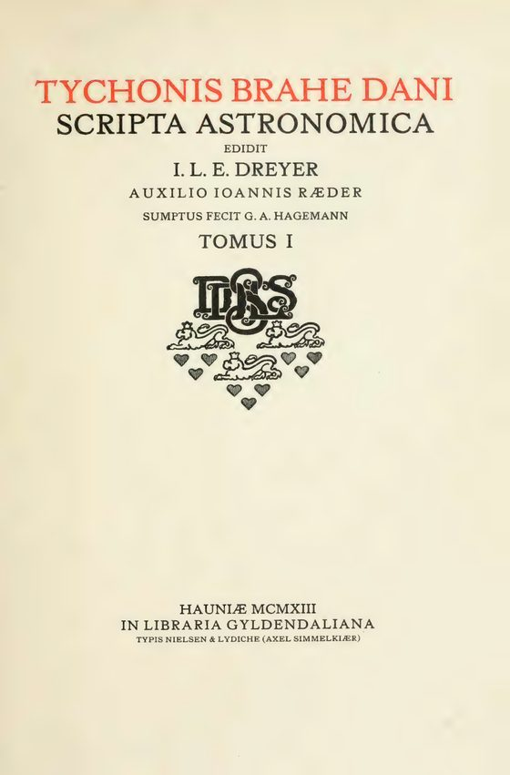
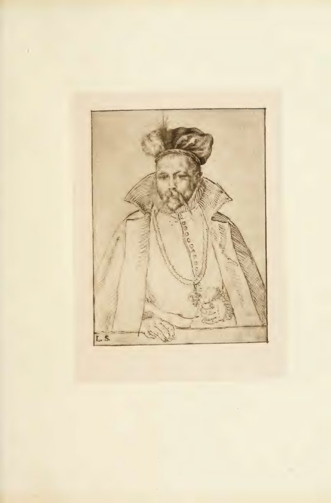
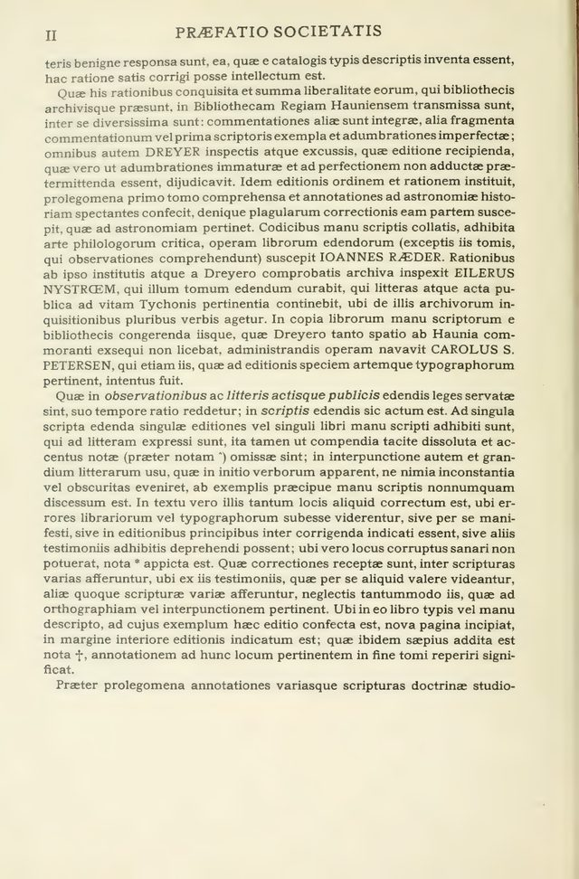
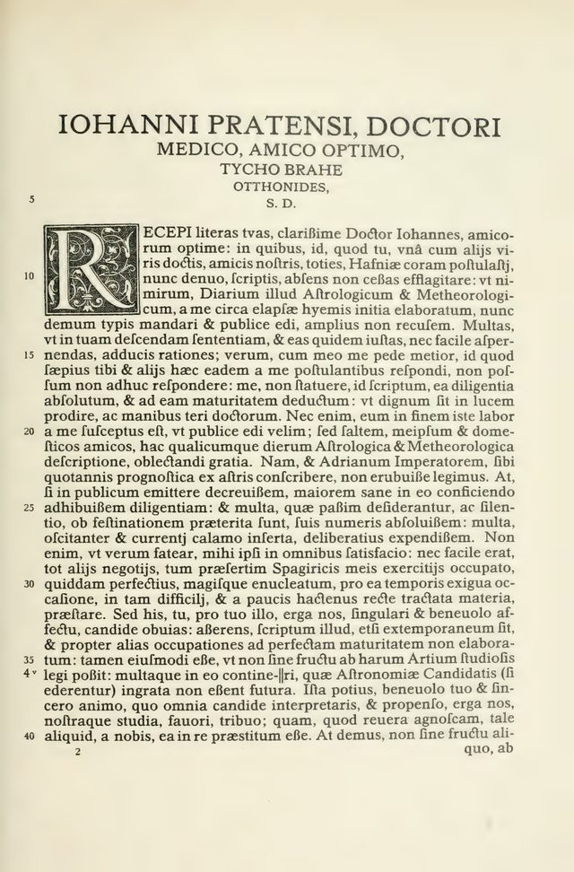
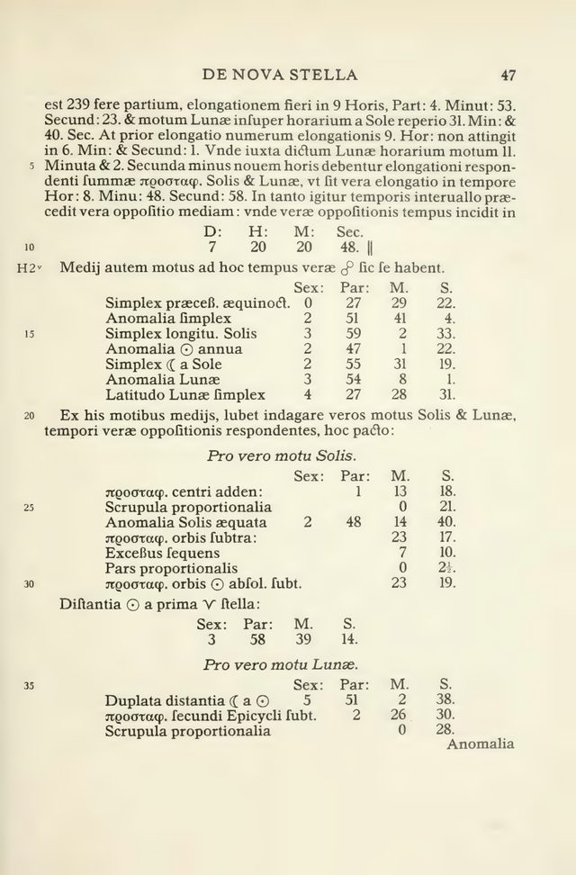

Bestand
Die Tomi
14 Dateien. Transkribiert ist eine, Tomus I, mit 402 Seiten. 13 Tomi sind PDF mit zusammen 5.462 Seiten und ohne Transkription.
Digitale Edition · Portal
Von der Ausgabe liegen 14 Tomi als Digitalisat vor. Transkribiert ist Tomus I, 402 Seiten, unter dem Titel, den sein Titelblatt nennt.
Tomus I trägt auf dem Titelblatt Tychonis Brahe Dani Scripta astronomica, herausgegeben von I. L. E. Dreyer, Hauniae 1913, In libraria Gyldendaliana. Die Titelblätter der übrigen Tomi sind nicht gelesen. Der Text von 1913 ist gemeinfrei; diese Seite zeigt Ausschnitte aus den Digitalisaten.
Bestand
14 Dateien. Transkribiert ist eine, Tomus I, mit 402 Seiten. 13 Tomi sind PDF mit zusammen 5.462 Seiten und ohne Transkription.
Tomus I
Titelblatt, Vorrede der Gesellschaft, ein Brief und Tafeln zur Nova stella sind gelesen. Die Transkription enthält 148 Tabellen und 49 Figuren.
Stand
Jede Zahl wird beim Bauen aus den Dateien der PDAI gelesen: aus den PDF, aus den Seiten der Transkription und aus dem Prüfbericht von Tomus I.
Ein Tomus ohne Transkription trägt keinen Werktitel. Die Ausgabe wird im Viewer gelesen.
Die Blätter stammen aus der Transkription von Tomus I. Die Bildunterschrift nennt, was auf dem Blatt steht.

Tomus I, Blatt 10Titelblatt: Tychonis Brahe Dani Scripta astronomica, Hauniae 1913.
Tomus I, Blatt 12Bildnis mit den Buchstaben L.S. in der linken unteren Ecke der Platte.
Tomus I, Blatt 15Praefatio societatis.
Tomus I, Blatt 82Brief an Johannes Pratensis. Am Rand steht die Quellfolio 4 v.
Tomus I, Blatt 120Laufende Überschrift DE NOVA STELLA 47, mit Tafeln zum wahren Lauf von Sonne und Mond.Die Spalte Seiten zählt die Transkription. Ein Strich heißt, dass keine Transkription vorliegt.
| Tomus | Titel | Jahr | Seiten |
|---|---|---|---|
| Tomus 1 | Tychonis Brahe Dani Scripta astronomica | 1913 | 402 |
| Tomus 2 | Digitalisat, 480 Seiten, ohne Transkription | – | |
| Tomus 3 | Digitalisat, 438 Seiten, ohne Transkription | – | |
| Tomus 4 | Digitalisat, 542 Seiten, ohne Transkription | – | |
| Tomus 5 | Digitalisat, 368 Seiten, ohne Transkription | – | |
| Tomus 6 | Digitalisat, 400 Seiten, ohne Transkription | – | |
| Tomus 7 | Digitalisat, 444 Seiten, ohne Transkription | – | |
| Tomus 8 | Digitalisat, 492 Seiten, ohne Transkription | – | |
| Tomus 9 | Digitalisat, 374 Seiten, ohne Transkription | – | |
| Tomus 10 | Digitalisat, 484 Seiten, ohne Transkription | – | |
| Tomus 11 | Digitalisat, 436 Seiten, ohne Transkription | – | |
| Tomus 12 | Digitalisat, 508 Seiten, ohne Transkription | – | |
| Tomus 13 | Digitalisat, 424 Seiten, ohne Transkription | – | |
| Tomus 14 | Keine Datei | – | |
| Tomus 15 | Digitalisat, 72 Seiten, ohne Transkription | – |
Was diese Seite zeigt, stammt aus den Dateien der Sammlung braheOO.
Gelesen ist das Titelblatt von Tomus I: Tychonis Brahe Dani Scripta astronomica, Hauniae 1913, In libraria Gyldendaliana.
Die Digitalisate stammen aus dem Internet Archive. Die übrigen Titelblätter sind nicht gelesen.